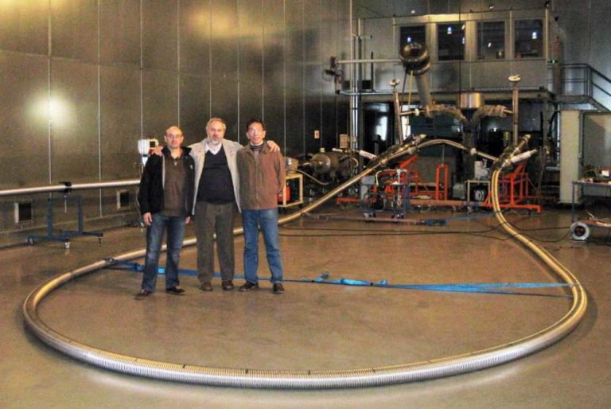
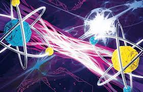

Actualmente existen proyectos internacionales con participación española (ICMAB-CSIC, UAB y financiación de Endesa) para el desarrollo de cables superconductores mejores y más baratos, con la demostración en 2009 del cable superconductor que soporta mayor intensidad de corriente eléctrica. Puede leerse la noticia aquí.

De izquierda a derecha, los investigadores Àlvar Sánchez (UAB), Xavier Granados (ICMAB-CSIC) y Du-Xing Chen (UAB), en las instalaciones de la empresa Nexans en Hannóver, donde se realizó el experimento.
Los superconductores son también limitadores de corriente: los superconductores dejan de serlo cuando se les somete a una corriente demasiado alta, convirtiéndose en los más rápidos limitadores de corriente posibles y evitando las pérdidas millonarias debidas a los picos de corriente.
Por otra parte, los aparatos de resonancia magnética que se utilizan en pruebas médicas de imagen, funcionan gracias a imanes creados con superconductores.
Aunque actualmente su uso es muy limitado se espera que los superconductores tengan un gran impacto en el transporte. Por una parte la posibilidad de construir motores superconductores mucho más pequeños y ligeros es muy interesante para la navegación marítima. La empresa americana American Superconductors ya ha construido un prototipo de barco impulsado mediante un motor superconductor. De forma similar los motores superconductores pueden utilizarse en automóviles como el construido por la empresa japonesa Sumitomo.
En el ámbito ferroviario los superconductores pueden utilizarse para construir trenes que levitan sobre vías magnéticas. Los superconductores se colocan en los bajos del tren y pueden utilizarse en la levitación de dos formas. En el tren maglev de Japón los superconductores se utilizan para generar campos magnéticos y el tren levita sobre las vías por levitación magnética aprovechando que los polos magnéticos iguales se repelen. Por el contrario en el prototipo de tren urbano que se está construyendo en Brasil se utiliza la levitación magnética superconductora. Los trenes que levitan son más seguros y pueden alcanzar altas velocidades.
Los superconductores suponen una gran promesa para combatir el problema de la demanda energética: nos pueden permitir generar, conducir y almacenar la electricidad de forma más eficiente. Una forma de generar energía es convertir energía mecánica en eléctrica, como en los generadores eólicos e hidráulicos. El uso de imanes producidos por bobinas superconductoras en estos generadores disminuye su peso y dimensiones, así como las pérdidas mecánicas en la producción de energías alternativas. Además el uso de generadores superconductores disminuye la dependencia en las escasas tierras raras que componen los imanes convencionales.
La energía eólica es una de las grandes promesas de energía verde debido a que es una energía limpia, renovable y abundante. España es la segunda potencia mundial detrás de Alemania y seguido de Estados Unidos. En los últimos años ha aumentado muchísimo su producción. China está haciendo una enorme inversión en este sector.
Actualmente se está trabajando mucho en mejorar el aerogenerador que transforma la energía cinética del viento en energía eléctrica y minimizar el problema de la intermitencia del viento. Se busca conseguir una mayor eficiencia y potencia. Hasta ahora se ha conseguido aumentar la potencia haciendo molinos cada vez mayores (tienen aproximadamente 114m de altura y el tamaño de las aspas es de 62m) haciendo que el manejo de esta infraestructura sea complejo. Asímismo se ha logrado mayor eficiencia con el uso de generadores de imanes permanentes. El inconveniente de estos generadores es que su peso es aproximadamente 180 toneladas. Además estos imanes se hacen con tierras raras, cada vez más escasas, y cuyo monopolio (97% de la producción) lo posee China. Por otro lado el viento es más estable en el mar y para la construcción de parques eólicos en el mar es crucial la reducción del tamaño.
